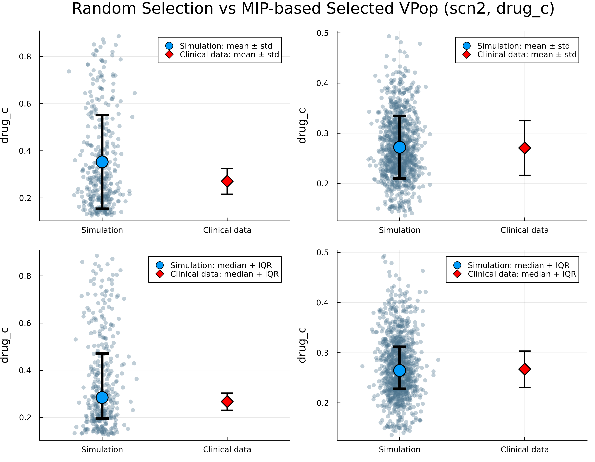

Generating Virtual Population for a PKPD Model
This tutorial demonstrates how to generate and select a virtual population (VPop) using a pharmacokinetic-pharmacodynamic (PKPD) model as an example. We use a three-compartment PK model with oral absorption and an Emax-type PD model. Two outputs, drug_c and pd_output_1, are observed on a set of drug regimens. The model is implemented in the Heta language and is available in the DigiPopRecipes repo.
Simulate a Plausible Population
First, simulate a large set of plausible patients by sampling model parameters within biologically plausible ranges. For each parameter, define biologically plausible ranges and simulate the model using the generated parameter sets. Here, we use HetaSimulator to define scenarios (drug regimens) and run the simulations. Refer to the HetaSimulator documentation for more details.
using VPopMIP, DigiPopData, CSV, DataFrames, Plots, StatsBase, Distributions, HetaSimulator
const PPOP_SIZE = 3000
parameters_df = DataFrame()
## Add parameters using Uniform(a, b)
# a = mean - sqrt(3) * std
# b = mean + sqrt(3) * std, based on the specified mean and standard deviation.
parameters_df[!, :Vc_0] = rand(truncated(Uniform(5.5 - sqrt(3)*0.1, 5.5 + sqrt(3)*0.1), 1e-7, 1e+7), PPOP_SIZE)
parameters_df[!, :kel] = rand(truncated(Uniform(0.3 - sqrt(3)*0.1, 0.3 + sqrt(3)*0.1), 1e-7, 1e+7), PPOP_SIZE)
parameters_df[!, :kdist_p] = rand(truncated(Uniform(0.7 - sqrt(3)*0.1, 0.7 + sqrt(3)*0.1), 1e-7, 1e+7), PPOP_SIZE)
parameters_df[!, :kdist_t] = rand(truncated(Uniform(0.01 - sqrt(3)*0.1, 0.01 + sqrt(3)*0.1), 1e-7, 1e+7), PPOP_SIZE)
parameters_df[!, :Emin_1] = rand(truncated(Uniform(5.0 - sqrt(3)*0.1, 5.0 + sqrt(3)*0.1), 1e-7, 1e+7), PPOP_SIZE)
parameters_df[!, :Emax_1] = rand(truncated(Uniform(10.0 - sqrt(3)*0.1, 10.0 + sqrt(3)*0.1), 1e-7, 1e+7), PPOP_SIZE)
parameters_df[!, :EC50_1] = rand(truncated(Uniform(0.8 - sqrt(3)*0.1, 0.8 + sqrt(3)*0.1), 1e-7, 1e+7), PPOP_SIZE)
p = load_platform("./models/PKPD")
scn = read_scenarios("./models/PKPD/scenarios.csv")
add_scenarios!(p, scn)
mc_res = mc(p, parameters_df)Load the Plausible Population
Convert the simulation results to a DataFrame and use load_vpop to define the VirtualPopulation type, which will be used for cohort selection.
ppop_df = DataFrame(mc_res)
rename!(ppop_df, :iter => :id)
ppop_df.scenario .= string.(ppop_df.scenario)
ppop = load_vpop(ppop_df; endpoints=["drug_c", "pd_output_1"])Define Experimental Data
Next, load experimental data. The VPopMIP approach was designed to address a problem frequently encountered in practice, where individual patient data is not available and only summary statistics are reported. Here, we load artificial data for the considered therapy in the form of Mean/SD, Median, and Quartile statistics. The data is bound to observed endpoints, and relevant objective function components are formed. For more details on the objective and data binding, consult the DigiPopData documentation.
metric_mean_sd_df = CSV.read("./models/PKPD/data_mean_sd.csv", DataFrame)
metric_quantile_df = CSV.read("./models/PKPD/data_quantile.csv", DataFrame)
metric_quartile_df = CSV.read("./models/PKPD/data_quartile.csv", DataFrame)
metric_mean_sd_bind = parse_metric_bindings(metric_mean_sd_df)
metric_quantile_bind = parse_metric_bindings(metric_quantile_df)
metric_quartile_bind = parse_metric_bindings(metric_quartile_df)
data = vcat(metric_mean_sd_bind, metric_quantile_bind, metric_quartile_bind)Select the Virtual Population
Use the select_cohort function to select a subset of plausible patients (the VPop) that best matches the target data.
vpnum = 1024 # desired VPop size
vpop = select_cohort(ppop, data, vpnum; scip_limits_gap = 0.01)Visualize and Compare
Compare the selected VPop to the target data and to a random selection of plausible patients.
function mean_std_plot(pop, scn, ept; metric_df = metric_mean_sd_df)
sim_df = filter(row -> (row[:scenario] == scn), DataFrame(pop))
exp_df = filter(row -> (row[:scenario] == scn && row[:endpoint] == ept), metric_df)
exp_mean = exp_df."metric.mean"[1]
exp_std = exp_df."metric.sd"[1]
sim_mean = mean(sim_df[!,ept])
sim_std = std(sim_df[!,ept])
default_blue = palette(:default)[1]
p = plot(
xticks = ([1, 2], ["Simulation", "Clinical data"]),
ylabel = ept,
legend = :topright,
xlims = (0.5, 2.5),
dpi = 400
)
x_sim = fill(1, nrow(sim_df)) .+ 0.08 .* randn(nrow(sim_df))
scatter!(
p,
x_sim,
sim_df[!,ept],
color = RGB(0.3, 0.45, 0.55), # blue-grey
alpha = 0.35,
markersize = 3.5,
markerstrokewidth = 0,
label = false
)
scatter!(
p,
[1], [sim_mean],
yerror = ([sim_std], [sim_std]),
color = default_blue,
markersize = 10,
linewidth = 4,
label = "Simulation: mean ± std"
)
scatter!(
p,
[2], [exp_mean],
yerror = ([exp_std], [exp_std]),
color = :red,
markersize = 9,
markershape = :diamond,
linewidth = 2,
label = "Clinical Data: Mean ± SD"
)
return p
end
function quartile_plot(pop, scn, ept; metric_df = metric_quartile_df)
sim_df = filter(row -> (row[:scenario] == scn), DataFrame(pop))
exp_df = filter(row -> (row[:scenario] == scn && row[:endpoint] == ept), metric_df)
metric_values = parse.(Float64, split(exp_df."metric.values"[1], ';'))
exp_q25 = metric_values[1]
exp_q50 = metric_values[2]
exp_q75 = metric_values[3]
sim_q25 = quantile(sim_df[!,ept], 0.25)
sim_q50 = quantile(sim_df[!,ept], 0.50)
sim_q75 = quantile(sim_df[!,ept], 0.75)
default_blue = palette(:default)[1]
p = plot(
xticks = ([1, 2], ["Simulation", "Clinical data"]),
ylabel = ept,
legend = :topright,
xlims = (0.5, 2.5),
dpi = 400
)
# --- Simulation scatter ---
x_sim = fill(1, nrow(sim_df)) .+ 0.08 .* randn(nrow(sim_df))
scatter!(
p,
x_sim,
sim_df[!,ept],
color = RGB(0.3, 0.45, 0.55), # blue-grey
alpha = 0.35,
markersize = 3.5,
markerstrokewidth = 0,
label = false
)
# --- Simulation median + IQR ---
scatter!(
p,
[1], [sim_q50],
yerror = ([sim_q50 - sim_q25], [sim_q75 - sim_q50]),
color = default_blue,
markersize = 10,
linewidth = 4,
label = "Simulation: median + IQR"
)
# --- Clinical data ---
scatter!(
p,
[2], [exp_q50],
yerror = ([exp_q50 - exp_q25], [exp_q75 - exp_q50]),
color = :red,
markersize = 9,
markershape = :diamond,
linewidth = 2,
label = "Clinical Data: Median + IQR"
)
return p
end
rand_vpopdf = ppop_df[sample(1:nrow(ppop_df), vpnum; replace=false), :]
rand_vpop = load_vpop(rand_vpopdf)
p11 = mean_std_plot(rand_vpop, "scn2", "drug_c")
p12 = mean_std_plot(vpop, "scn2", "drug_c")
p21 = quartile_plot(rand_vpop, "scn2", "drug_c")
p22 = quartile_plot(vpop, "scn2", "drug_c")
p = plot(p11, p12, p21, p22, layout = (2, 2), size = (900, 700),
plot_title = "Random Selection vs MIP-based Selected VPop (scn2, drug_c)")
